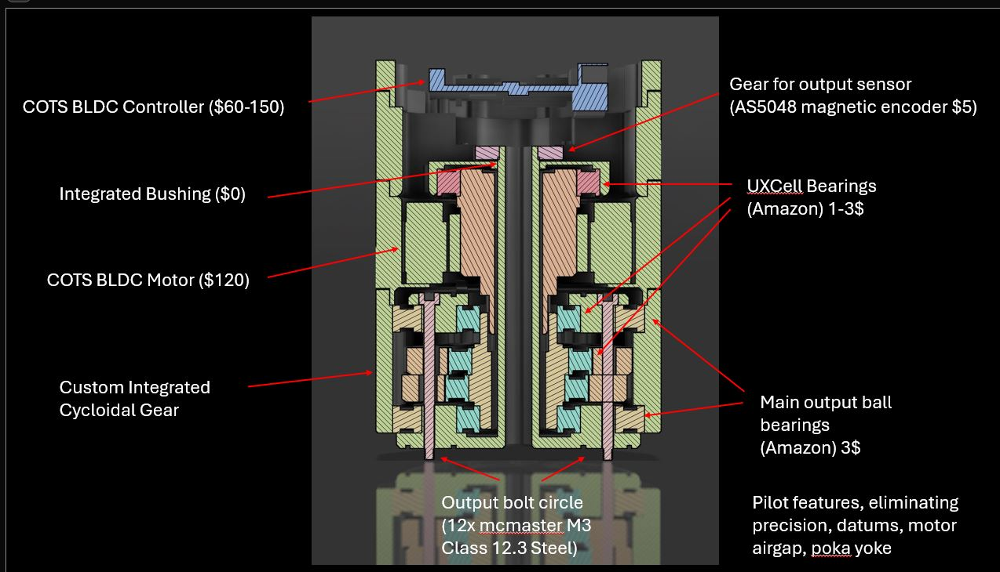

Chris Vallone
Ongoing Projects in Robotics, Mechanical Design & Embedded Systems
üîß Humanoid Robots & Custom Actuators
- Developing a bipedal humanoid robot platform
- Designing and tuning servo actuators for precision control
- CAD, FEA, and embedded-control integration
- Mechanical & manufacturing engineering, DFM, cost minimisation

- Design goal: go anywhere a human can (locomotion) and do anything a human can (manipulation up to 20 kg boxes)
⚙️ Actuator Analysis & Free-Body Diagrams
Each joint is driven by an actuator that mimics human muscle pairs, using BLDC FOC control and >93 % efficient gearing.
Structural analysis validates a 30 Nm continuous / 90 Nm peak torque envelope.

üñºÔ∏è Full-Body Cross-Sections
The chassis packages battery, power distribution, IMU, compute, and wire manifolding in a 45 mm-thin torso.

Actuators are integrated into four serial-rotary chains to keep limbs fully back-drivable.


ü§ñ Simulation-to-Reality Locomotion
Reinforcement-learning policies are trained in NVIDIA Isaac Gym and deployed to physical hardware with <5 ms inference latency.
üì∏ As-Built Actuator Gallery
üöÄ UT-Dallas Bates Propulsion Lab ‚Äì Rocket Test Rigs
Role: structural design & fabrication. Built load-tested stands for rocket propulsion systems, integrating sensors and LOX plumbing.


üìê GD&T ‚Äì Water-Jacketed Rocket Chamber
Delivered detailed drawings with 0.25 mm profile tolerance on a multi-start lathe process.
üèÜ FIRST Robotics ‚Äì 5th Place, World Championship
Led mechanical sub-team for drivetrain & manipulator; iterated from whiteboard to final bot in 45 days.